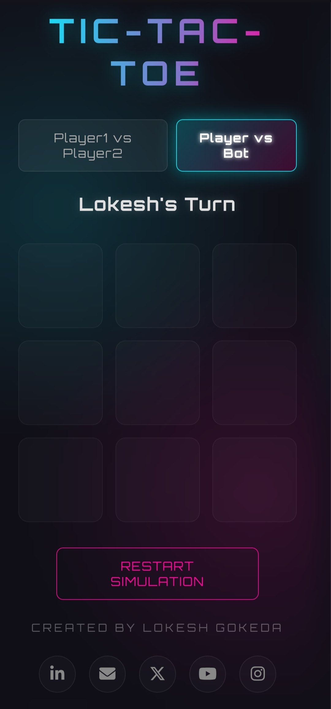

Dynamic engineering
meets minimalist aesthetic.
An advanced exploration into UI engineering, high-output interface design, and architectural speed benchmarks managed by Lokesh Gokeda.
Explore Advanced Journal
Engineering an Interactive Tic-Tac-Toe Game
An exploration into native event loops, conditional vector math state machines, and high-fidelity responsive interfaces using raw vanilla architectures.
01 Architectural Overview
This production experiment marks a definitive milestone in scaling frontend infrastructure. The primary focus was placed on engineering an intuitive strategy matrix interface while evaluating structural JavaScript state management parameters without third-party framework overhead.
Experience the operational client live on the network pipeline:
Launch Game SimulationCore Architecture
- Structure
HTML5 Semantic Engine - Style Tier
CSS3 Flexible Matrix - Logic Engine
JavaScript ES6 Runtime
02 Functional Capabilities & System Design
🎮 Dual-Agent Operations
Supports discrete Player-vs-Player routines alongside an automated computer agent bot loop.
🌌 Modern Luminescent UI
Formulated with low-fatigue cyber-luminescent styling components using hardware-accelerated layouts.
⚡ Synchronous State Wipes
Instant runtime event listeners allow vectors to clear arrays dynamically upon requesting simulation restarts.
03 Key Engineering Takeaways
| Development Vector | Core Systems Implemented |
|---|---|
| DOM Synchronization | Optimized tree calculations using native browser tracking interactions. |
| Matrix Analysis | Built precise array parsing rules checking vertical, horizontal, and diagonal index flags for outcomes. |
| Adaptive Design Systems | Enforced mathematical fluid scaling matrices supporting high-density displays. |
💬 Continuous Deployment Loop
This client build represents the base version baseline. Further telemetry data, system updates, and optimizations are running continuously. Iterative feedback is highly appreciated.